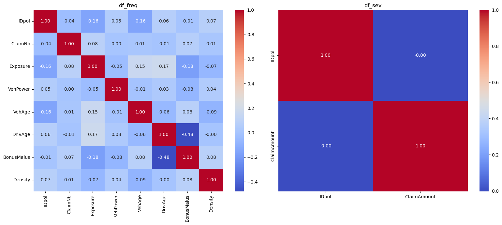
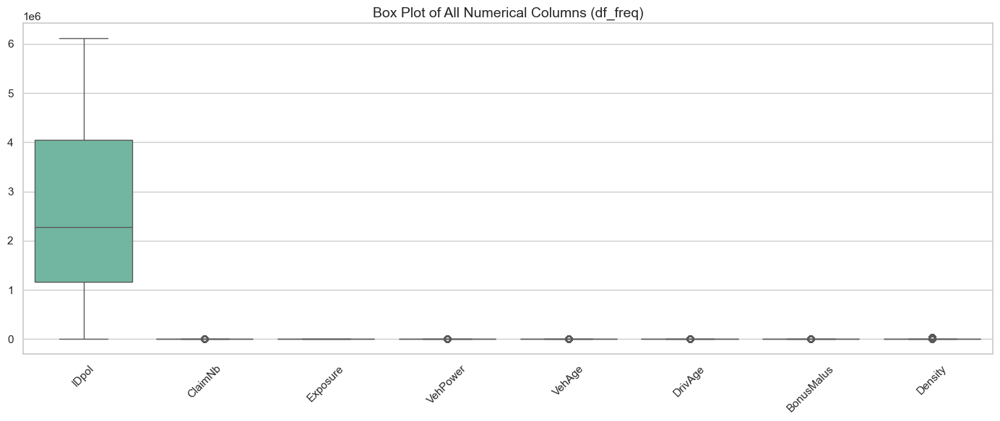
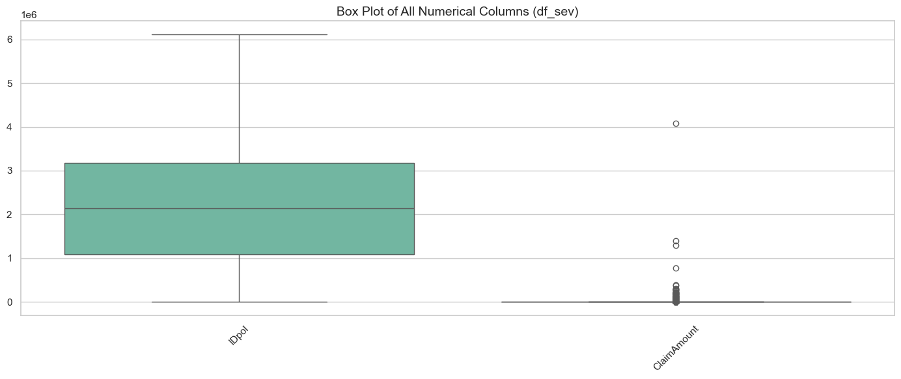
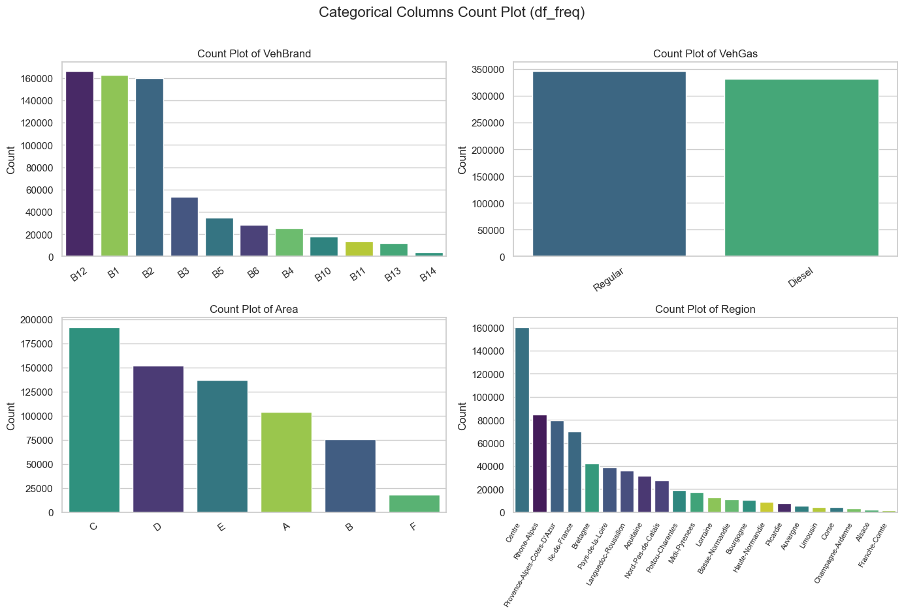
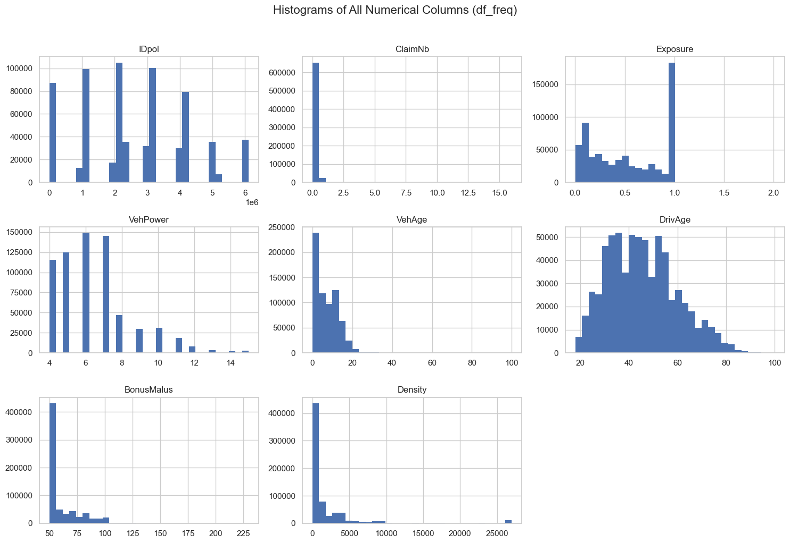
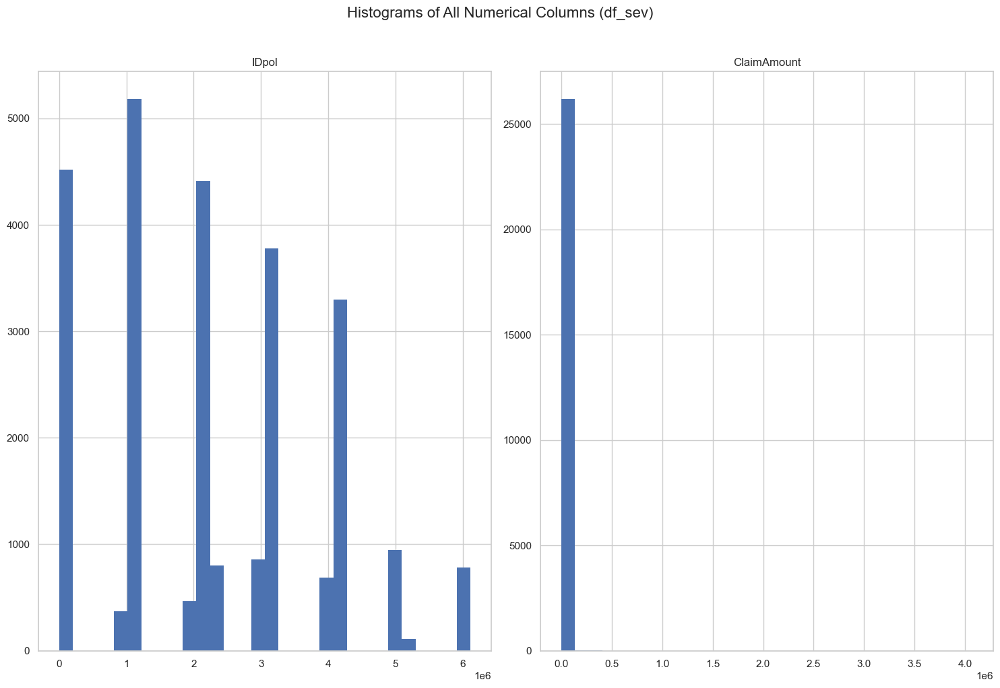

گزارش تحلیلی دادههای بیمه خودرو
۱. معرفی مجموعه داده و هدف اصلی
این مجموعه داده مربوط به بیمه خودرو است و از دو جدول مکمل تشکیل شده است: جدول Frequency شامل ۶۷۷٬۹۹۱ بیمهنامه با اطلاعاتی مانند سن راننده، سن و قدرت خودرو، نوع سوخت، منطقه و تعداد خسارتها است و جدول Severity شامل ۲۶٬۴۴۴ رکورد از مبالغ خسارتهای پرداختشده میباشد.
هر بیمهنامه با شناسه IDpol به خسارتهای خود متصل میشود؛ بنابراین میتوان هم احتمال وقوع خسارت و هم هزینه واقعی آن را تحلیل کرد. هدف اصلی این داده، شناسایی عوامل مؤثر بر ریسک و کمک به محاسبه حق بیمه منصفانه برای رانندگان است.
۲. بررسی ردیفهای تکراری و کیفیت دادهها
در این دیتاست ممکن است یک بیمهنامه چند خسارت داشته باشد؛ به عنوان مثال، یک شناسه میتواند خسارتهای متفاوتی مانند ۱۲۰۰، ۱۸۰۰ و ۱۰00 داشته باشد. این موارد تکراری نیستند زیرا مبالغ آنها متفاوت است. تنها ردیفی که هم IDpol و هم ClaimAmount در آن کاملاً برابر باشد، تکراری واقعی محسوب میشود.
نتایج بررسی کیفیت داده نشان میدهد که هر دو دیتاست از نظر مقادیر گمشده کاملاً سالم هستند؛ در df_freq تمام ۱۲ ستون و در df_sev هر دو ستون هیچ مقدار missing ندارند و درصد Missing در هر دو ۰٪ است. همچنین در df_freq هیچ ردیف تکراری وجود ندارد، اما در df_sev تعداد ۲۳۵ ردیف تکراری واقعی شناسایی و حذف گردید و تعداد رکوردها از ۲۶٬۴۴۴ به ۲۶٬۲۰۹ کاهش یافت.
۳. تحلیل آمار توصیفی و ساختار متغیرها
آمار توصیفی نشان میدهد که در df_freq بیشتر بیمهنامهها تعداد خسارت صفر دارند (میانه ClaimNb برابر ۰ است)، در حالی که حداکثر تعداد خسارت برای یک بیمهنامه ۱۶ مورد بوده است. Exposure نیز بهطور متوسط حدود ۰.۵۳ سال است. سن متوسط رانندگان (DrivAge) حدود ۴۵ سال و سن متوسط خودروها (VehAge) حدود ۷ سال میباشد.
شناسه IDpol در df_freq دارای ۶۷۷٬۹۹۱ مقدار یکتا و در df_sev دارای ۲۴٬۹۴۴ مقدار یکتا است که نشان میدهد برخی بیمهنامهها چند خسارت داشتهاند. ClaimNb با ۱۱ مقدار متفاوت یک متغیر شمارشی محدود است، در حالی که Exposure با ۱۸۱ مقدار و Density با ۱۶۰۷ مقدار متفاوت توزیع شدهاند. در df_sev نیز ClaimAmount حدود ۱۲٬۲۵۵ مقدار متفاوت دارد که بیانگر پیوسته و متنوع بودن مبلغ خسارت است.
۴. توزیع دستهای، همبستگی و دادههای پرت
بررسی ستونهای دستهای نشان میدهد که VehBrand شامل ۱۱ برند خودرو است و بیشترین فراوانی مربوط به B12، B1 و B2 است. VehGas دارای دو نوع سوخت است که Regular با ۳۴۵٬۸۶۳ مورد کمی بیشتر از Diesel با ۳۳۲٬۱۲۸ مورد است. ستون Area دارای ۶ دسته (بیشترین دسته C با ۱۹۱٬۸۷۴ رکورد و کمترین F با ۱۷٬۹۵۳) و Region دارای ۲۲ منطقه است که بیشترین فراوانی مربوط به استان Centre با ۱۶۰٬۵۹۵ رکورد میباشد.
ماتریس همبستگی نشان میدهد اکثر متغیرهای عددی همبستگی ضعیفی با هم دارند. مهمترین رابطه مربوط به سن راننده (DrivAge) و BonusMalus است که با ضریب ۰.۴۸- همبستگی منفی نسبتاً قوی دارد؛ یعنی رانندگان مسنتر معمولاً امتیاز Bonus-Malus بهتری دارند.
در df_sev میانگین مبلغ خسارت حدود ۲,۲۶۵ است، اما انحراف معیار بسیار بزرگتر از میانگین بوده و حداکثر خسارت به حدود ۴.۰۷ میلیون میرسد. این اختلاف شدید و نمودارهای جعبهای (Box Plot) نشاندهنده حضور دادههای پرت (Outliers) و توزیع چوله به راست شدید در مبلغ خسارت است.
۵. نتیجهگیری و یافتههای کلیدی
- اکثر رانندگان این جامعه از سه برند خودرویی B12، B1 و B2 استفاده میکنند و نوع سوخت خودروها بهطور تقریباً مساوی بین بنزین معمولی و دیزل تقسیم شده است.
- از نظر جغرافیایی، تمرکز اصلی خودروها در مناطق C و D و عمدتاً در استان Centre ثبت شده است.
- همبستگی منفی معناداری (۰.۴۸-) بین سن راننده و ضریب Bonus-Malus وجود دارد.
- توزیع خسارتهای مالی به شدت غیرنرمال بوده و شامل خسارتهای نادر اما بسیار سنگین تا سقف ۴.۰۷ میلیون واحد است.





